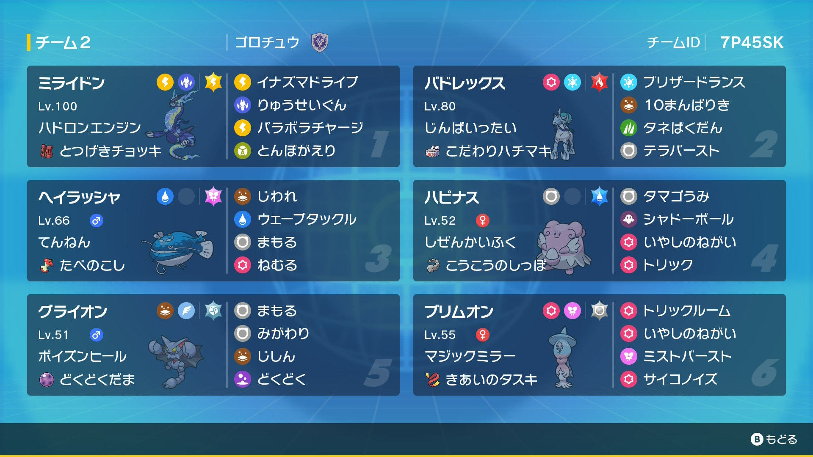

白バド"受け＆トリル"構築
まえがき
こんにちは、ポケモンプレイヤーのGorochuです。
本サイトでは、s38で使用した白バド"受け＆トリル"構築について紹介します。
最終レートは1830、順位は500位でした。
本構築のコンセプトは、「受け構築とトリル構築を組み合わせる」です。
それでは、これから構築経緯,使用ポケモン,立ち回りについて紹介します。
構築経緯
初手の高火力アタッカーで数的有利をとり、裏の受けポケモンでTODを狙う構築に興味を持ち、それをトリルと組み合わせてみてはどうかと考えました。
まずはアタッカーですが、火力と耐久が優れていて初手投げ性能が高い鉢巻白バドを採用しました。
次は受けポケモンですが、元受けルーパーのため練度があるのと、硬派な受け構築と思わせることで白バドを宿り木型だと誤認させるために、グライハピラッシャを採用しました。ハピナスは瞑想型ではなく、白バドをサポートするための後攻の尻尾トリック癒しの願い型としました。
次はもう一体の禁伝枠ですが、白バドが苦手とするラッシャとママンに強く、黒バドに後投げできて便利なチョッキミライドンを採用しました。
最後にトリル要員として、設置技や挑発を防ぐことができて安定感のあるトリル癒しブリムオンを採用しました。ブリムオンがいるおかげで、初手白バドで攻撃した後ただTODを狙うだけでなく、トリル癒しで再度白バドを展開することができるため、立ち回りの幅を広げることができます。
以上のポケモンで本構築が完成しました。
使用ポケモン
白バドレックス＠拘り鉢巻
テラス：炎/性格：意地っ張り
207(252)-232(204)-170-84-157(52)-62
ブリザードランス/10万馬力/種爆弾/テラバースト
初手に出して対面を制し、ブリムやハピで再度展開した後また対面を制してもらいます。
対面力up,やけど無効のために、炎テラスにしています。
最遅ママン-1個体にしています。
ミライドン＠とつげきチョッキ
テラス：電気/性格：控え目
207(252)-94-121(4)-189(132)-150-156(4)
イナズマドライブ/パラボラチャージ/流星群/とんぼ返り
黒バドや水ラオス,ラッシャなどに対して白バドから後出しします。
ミライの他にラッシャもいるため、水ラオスがインファイトを打ってくる場合があるのですが、その場合はブリムに交代してトリル癒しの起点にします。
相手に地面ポケモンがいる場合は積極的にとんぼ返りを打ち、白バド展開を狙います。
イナズマドライブとパラボラチャージの威力を高めるために電気テラスにしています。
ブリムオン＠きあいのタスキ
テラス：ノーマル/性格：のんき
164(252)-95-161(252)-157(4)-123-30
トリックルーム/癒しの願い/ミストバースト/サイコノイズ
死に出しもしくは変化技や格闘技,ドラゴン技のタイミングで出し、トリル癒しを打って白バドを再度展開させます。
鉢巻水ラオスの水流を耐えるためにhb特化にしています。そうすることで、ランドロスやディンルーに対して後投げしやすくなるのも魅力的です。
癒しの願いを打つことが多いですが、相手がタスキを持っていそうな場合,白バド圏内に持っていきたい場合にはミストバーストを打ちます。
ノーマルテラスにすることで、事前に設置技をまかれたとしても黒バドに対してトリル癒しをすることができます。
as0個体にしています。
ハピナス＠後攻の尻尾
テラス：水/性格：図太い
331(4)-27-68(252)-95-187(252)-75
トリック/癒しの願い/シャドーボール/卵産み
特殊ポケモンに対して後投げし、後攻の尻尾トリックを打った後、先制で癒しの願いを打ちます。そうすることで、再度白バドを展開したり、ラッシャの地割れの試行回数を稼いだりすることができます。
また、卵産みを採用しているため、癒しの願いを打たずに耐久してTODを狙うこともできます。
テラスタイプは、カイオーガの潮吹き,コライドンのフレドラに強くするために、水にしています。
ヘイラッシャ＠食べ残し
テラス：フェアリー/性格：わんぱく
257(252)-121(4)-183(252)-67-85-55
地割れ/ウェブタ/守る/眠る
一般的なラッシャですね。
テラスタイプは、コライドンの鉢巻逆鱗やスケショの一貫をきるためにフェアリーにしています。
グライオン＠毒々玉
テラス：はがね/性格：わんぱく
179(228)-115-194(252)-58-99(28)-115
毒々/地震/身代わり/守る
これまた一般的なグライオンとなっております。
ラッシャのウェブタ意識でhbに振り、汎用性の高いはがねテラスにしています。
立ち回り
①初手白バド,ブリム,@1
②初手白バド,ラッシャ,ハピ
③グライハピラッシャ
の3種類の主な立ち回りがあります。
①は対面的な立ち回りとなっています。「初手白バドで攻撃」→「＠1に交代」→「＠1がやられる、またはブリムに交代したらトリル癒し」→「再度白バドで攻撃」
②は初手白バドで数的有利を狙い、その後受けポケモンでTODを狙うか、隙を見てハピで尻尾トリック癒しを打ち、再度白バドを展開する立ち回りとなっています。
③は白バドミライではどうしても攻めきれないような構築に対して選出します。
構築の改善点とまとめ
実際は①の対面的な選出をすることがかなり多く、構築のコンセプトである受け要素が少ないように感じました。その理由は、ハピの尻尾トリックでは一体しか相手を縛れないため、ハピの尻尾トリック癒しよりもブリムのトリル癒しの方が強力である場面が多かったからだと考えられます。
改善点としては、ハピの代わりにサイコシードトリル癒しイエッサン♀を採用して、トリル展開を狙いやすくするのはどうかと考えました(TODを狙いにくくなるのが欠点ですが...)。
しかし、受けポケモンがいるおかげで白バドに対する型の誤認や選出誘導を狙うことができ、トリル構築と受け構築は相性が良いのかも...という結論に至りました。
ポケモンsvがいつまで続くかわかりませんが、よりよいトリル構築を作るためにこれからも頑張ろうと思います。
お読みいただきありがとうございました。